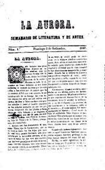

Los Hilos de Monik
Los lectores de tabaquería
Publicado el 30 de mayo de 2020 - 3 tweets - Hilo original en Twitter
1
¿Cómo surgieron los lectores de tabaquería?
En la década de 1850, la prisión del Arsenal de La Habana autorizó a que los cigarreros encarcelados organizaran lecturas mientras trabajaban, una adaptación de las lecturas en refectorios de conventos y comedores de prisiones.

2
En 1865, Saturnino Martínez, un empleado de la fábrica de habanos de Jaime Partagás, fundó el periódico La Aurora, un “semanario dedicado a los artesanos”. Se vendió mayormente a trabajadores del tabaco.
La Aurora hizo campaña para expandir el experimento de la prisión.
3
En 1864, la fábrica Viñas, en Bejucal, autorizó a hacer lecturas de forma permanente. El primer lector se llamó Antonio Leal.
En enero de 1866, se hizo una lectura experimental en la fábrica El Fígaro, en La Habana. Otras siguieron el ejemplo.